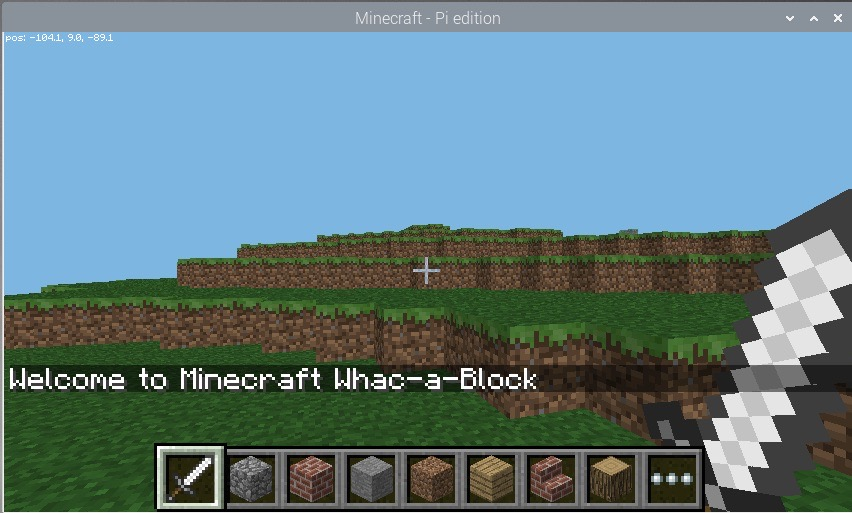
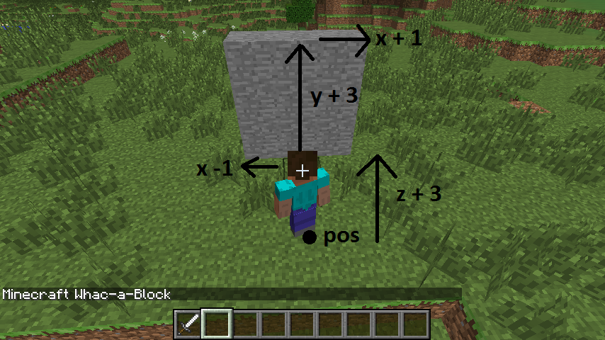
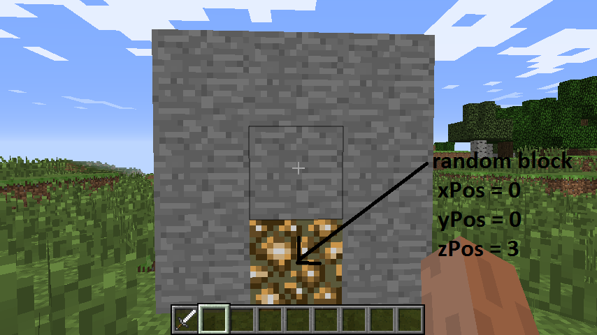
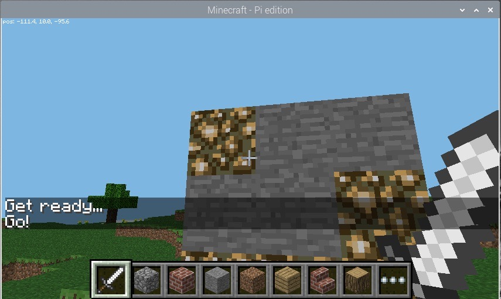
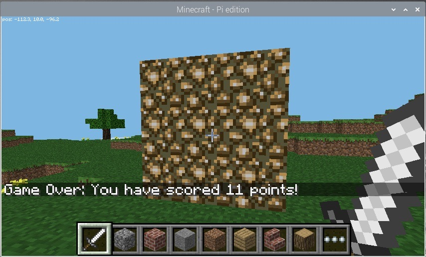

Create a "Whac-a-Block" game in Minecraft from Julia using PiCraft.jl
Hello everyone! If you are reading this, you’re probably wondering how you can create a game using PiCraft.jl. Well, that's what we're going to be doing today! Our game is called "Whac-a-Block" and is inspired by the classic arcade game "Whac-a-Mole".
The objective of this game is quite simple: it's simply to whack the blocks that light up as glowstone with a sword, and turn them back to stone. You will earn points for each block you turn back to stone! The game is over when all the blocks have been turned into glowstone.

Check out this YouTube video for a quick demonstration of the game!
This tutorial will be split into 7 parts:
- Installing Julia, RaspberryJamMod, and Setting up PiCraft.jl
- Creating the program and making sure that everything's working
- Building the game board
- Turning the blocks on
- Creating the "whacking" functionality
- Adding Game Over!
- Optional: Adding the option to change difficulty
Step 1: Installing Julia, RaspberryJamMod, and Setting up PiCraft.jl
PiCraft is a Julia package which utilizes the Minecraft: Pi edition programming API to control the Minecraft World. The package can be used with Minecraft: Java Edition with the help of RaspberryJamMod & RaspberryJuice plugins.
Minecraft: Java edition users
Follow the Julia installation instructions here for more details.
If you need help with installing Minecraft, please check out [https://www.minecraft.net/en-us/download/alternative].
Get RaspberryJuice or RaspberryJamMod
Officially the ability to communicate with the Minecraft world is only available for the Minecraft: Pi edition. To get this to work on the Java edition we need to install a Mod.
- "RaspberryJamMod" is a Forge Mod, if you wish to use this along with other Forge mods then this is recommended. Installation instructions are available here.
- "RaspberryJuice" is a Bukkit server plugin, recommended if you wish to work on a Bukkit Minecraft server. Get it here.
For more information on how you can do so, please click here.
Minecraft: Pi edition / Raspberry Pi users
First, grab your Raspberry Pi. Turn it on and open Terminal. Once you're there, type the following:
sudo apt install juliaThis should grab you the version 1.0.3, which is enough for this case. (I know it isn't the latest version!)
The Minecraft: Pi edition is pre-installed on all Rasbian since September 2014. Launch it by navigating to Menu > Games or typing minecraft-pi in the terminal.
Adding PiCraft.jl
Type julia in your Terminal to enter Julia if you haven't already. Then type the following to add the package:
using Pkg
Pkg.add("https://github.com/JuliaBerry/PiCraft.jl")Step 2: Connecting PiCraft.jl to Minecraft & Creating the program
Congrats on completing step 1! Now, you can load the package you just added by entering the following in Julia:
using PiCraftIf you get an error saying "Unable to connect to minecraft world" then Minecraft may not be running. You need to be inside a World to the launch screen/menu. Otherwise, check whether RaspberryJamMod was correctly installed.
If you are still having trouble, or want to connect to a instance running on another computer running on your network, please check out the instructions here for more details.
To test, first connect using the connectToWorld(address, port = 4711) function. Then, enter post("Hello World") in the julia terminal. You should see "Hello World" displayed in the minecraft chat if everything's working properly.
Now, you can go the the directory you would like to save the program and open a new Julia file called whack.jl. Make sure it is saved properly. Then, you may enter post("Welcome to Minecraft Whac-a-Block") and see the following result:

Step 3: Building the game board
The next step is to create the game board consisting of 3x3 stone blocks, which will randomly turn into glowstone and light up.
We are going to create the board right in front of the player's current position. First, we need to go the tile they're on (ie. their position), let's do that using getTile(). This returns the tuple containing the coordinates of the block the player's on.
tile = getTile()Then we can use the setBlocks() function to create the game board out of stone.
setBlocks(tile .+ (-1, 0, 3), tile .+ (1, 2, 3), Block(1))
From now on, please wrap everything we do with a function called main() and call it when you run it. This is important because of how the scoping works in Julia with different variables. See this Discourse thread for more details.
You can let the user know that the game is about to start by posting a couple of messages to the chat and delay them using the sleep() function.
post("Get ready...")
sleep(2)
post("Go!")When you run the program again, you should see the game board appear directly in front of the player and the messages you sent out.
Step 4: Turning the blocks on
Now, we'll be creating the section that turns the stone blocks to glowstone and turn them on, by using the random() function to pick a random block on the gameboard to turn on.
Let's create a variable called blocksLit, which will hold the number of blocks that are currently on (ie. became glowstone). Then, create another variable called points to store how many points the player has scored, which will be printed out at the game of the game. For now, let's set them both to 0.
blocksLit = 0
points = 0Your program will need to loop until the game is over (ie. in this case, until all the blocks are lit).
For this, we'll create a while loop which will continue until the blocksLit variable is 9 (when all the blocks are lit). We can put a small delay so that the game won't run too fast that no one will be able to "whack" anything!
while blocksList < 9
sleep(0.2)Notice how there isn't an end to the loop. That's because it's not done yet. The code below will continue to be part of the while loop.
Now, we need to randomly turn a block into glowstone. We need to implement this in such a way that allows it to cope with situations such as whether the block you randomly chose is already on as glowstone. Here, we'll be using a method that creates a random position first, then check to see whether that block is stone. If it isn't stone (meaning that it's glowstone), it'll try to find a new position randomly again, and will do this continously until there's an unlit block.
First, create a variable called lightCreated then set it to false. Then, create a while loop that continues until lightCreated is set to true. You can also increase the number of blocksLit by 1, to show that another block will be lit:
blocksLit = blocksLit + 1
lightCreated = false
while !(lightCreated)Now, once there's a block that has turned to glowstone, lightCreated will be set to true and the loop will exit. However, this isn't done yet, as we need to fill in the rest of the loop.
xpos = tile[1] + randn(-1:1)
ypos = tile[2] + randn(0:2)
zpos = tile[3] + 3
Use getBlock(x,y,z) and an if statement to check if the block at the random position is stone. If it is, set it to glowstone using setBlock(x,y,z,blockId) and make lightCreated = true; if this is not changed, the code will go back to the start of the loop and find another random position.
if getBlock(xpos, ypos, zpos) == Block(1,0)
setBlock(xpos, ypos, zpos, Block(89,0)
lightCreated = true
end
end
endNow you can run the program again. This time you should see the board appearing and gradually the stone blocks turning into glowstone one by one until all nine are lit.
Step 5: Adding the "whacking" functionality

Now, we would like to know whether the player has "whacked" a block or not. Luckily, PiCraft.jl has a function that allows you to find out what blocks have been hit. These are called Hit Events and can be found out using the pollBlockHits() function, which returns an array of these events. Each event is described by a tuple ((x, y, z), face, entityId) and the x,y,z values describe the position of the block that got hit.
What we are trying to achieve here is to find out the position of the block that was hit before checking whether the block hit was glowstone using getBlock. If it was hit, then you can turn it back to stone using setBlock to reteduce the number of blocks lit and increase the number of points.
So, in your outer while loop starting with while blocksLit < 9, add the following for loop after sleep(0.2):
for block in pollBlockHits()This iterates through all the blocks that had a Hit event and will do the following to them. We can use getBlock and the block data from pollBlockHits() to see if the block hit was glowstone using an if statement. Then, using setBlock to change it back to stone and decreasing blocksLit by 1 and increasing points by 1:
if getBlock((block[1][1], block[1][2], block[1][3])) == Block(89, 0)
setBlock((block[1][1], block[1][2], block[1][3]), Block(1, 0))
blocksLit = blocksLit - 1
points = points + 1
end
endNow, if you run it again, you should see the board appearing and the blocks lighting up like last time. But in addition, you should also see them turning back to stone if you hit them with a sword by right-clicking!
Step 6: Game Over & Finishing Off
Now, you can let everyone know that the game is over (when all 9 blocks are lit) and tell the player how many points they have scored (how many glowstone they turned back into stone). Place the following underneath the outer while loop starting with while blocksLit < 9.
post("Game Over: You have scored ", string(points), " points!")
Congratulations!
Your final code should look like something along the lines with the following:
using PiCraft
post("Welcome to Minecraft Whac-a-Block")
tile = getTile()
setBlocks(tile .+ (-1, 0, 3), tile .+ (1, 2, 3), Block(1))
function main()
post("Get ready...")
sleep(2)
post("Go!")
blocksLit = 0
points = 0
while blocksLit < 9
sleep(0.2)
for block in pollBlockHits()
if getBlock((block[1][1], block[1][2], block[1][3])) == Block(89, 0)
setBlock((block[1][1], block[1][2], block[1][3]), Block(1, 0))
blocksLit = blocksLit - 1
points = points + 1
end
end
blocksLit = blocksLit + 1
lightCreated = false
while !(lightCreated)
xpos = tile[1] + rand(-1:1)
ypos = tile[2] + rand(0:2)
zpos = tile[3] + 3
if getBlock((xpos, ypos, zpos)) == Block(1,0)
setBlock((xpos, ypos, zpos), Block(89, 0))
lightCreated = true
end
end
end
post("Game Over: You have scored ", string(points), " points!")
end
main()Optional: Adding the option to change difficulty
You can alter the difficult of the game by changing how long the program waits before lighting up another stone block into glowstone. Currently it is sleep(0.2) so it's 0.2 seconds. You can decrease that to make the game harder and increase it to make it easier.
We can create 10 difficulty levels. 10 being the hardest with a 0.1-second interval, and 1 being lowest with a 1-second interval. We can do this by creating a function that asks the user for the difficulty level, analyses it to turn into the interval we want in seconds, which will be the argument for the sleep() function.
function difficulty()
println("Enter difficulty (1-10)")
diff = 1.1 - (parse(Int64, readline()) / 10)
println("Please return to Minecraft!")
return diff
endThen, all we have to do is call this function in the main() function where everything else is in. Create a variable called level to call this function and have the analysed value put in:
level = difficulty()Then change the sleep(0.2) in the outer while loop starting with while blocksLit < 9 to the following:
sleep(level)Final Code:
using PiCraft
post("Welcome to Minecraft Whac-a-Block")
tile = getTile()
setBlocks(tile .+ (-1, 0, 3), tile .+ (1, 2, 3), Block(1))
function difficulty()
println("Enter difficulty (1-10)")
diff = 1.1 - (parse(Int64, readline()) / 10)
println("Please return to Minecraft!")
return diff
end
function main()
level = difficulty()
post("Get ready...")
sleep(2)
post("Go!")
blocksLit = 0
points = 0
while blocksLit < 9
sleep(level)
for block in pollBlockHits()
if getBlock((block[1][1], block[1][2], block[1][3])) == Block(89, 0)
setBlock((block[1][1], block[1][2], block[1][3]), Block(1, 0))
blocksLit = blocksLit - 1
points = points + 1
end
end
blocksLit = blocksLit + 1
lightCreated = false
while !(lightCreated)
xpos = tile[1] + rand(-1:1)
ypos = tile[2] + rand(0:2)
zpos = tile[3] + 3
if getBlock((xpos, ypos, zpos)) == Block(1,0)
setBlock((xpos, ypos, zpos), Block(89, 0))
lightCreated = true
end
end
end
post("Game Over: You have scored ", string(points), " points!")
end
main()Now you're all set! Thanks for reading!
written by kfung
Reference:
Some images are from the Whac-A-Block Game worksheet on raspberrypi.org under CC BY-SA.